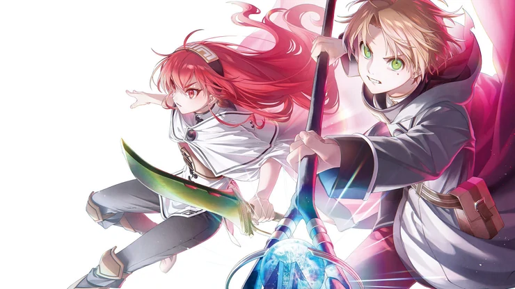

«Реинкарнации безработного» — трейлер третьего сезона

Третий сезон «Реинкарнации безработного» (Mushoku Tensei: Isekai Ittara Honki Dasu), одного из популярнейших исекаев современности, обзавёлся полноценным трейлером и не совсем полноценной датой выхода: стало известно, что сериал стартует в следующем году. 34-летнего безработного хикикомори после смерти его родителей выгнали из дома. Всеми отвергнутый и без гроша в кармане, он понимает, что зашёл в тупик и его жизнь могла бы быть намного лучше, сделай он другой выбор в прошлом. Как раз во время этих размышлений он видит грузовик, несущийся прямо на трёх школьников. Герой бросается спасти подростков, однако сам погибает под колёсами... И перерождается в мире меча и магии в теле младенца по имени Рудеус Грейрат. Теперь он начнёт жизнь с чистого листа и без сожалений.